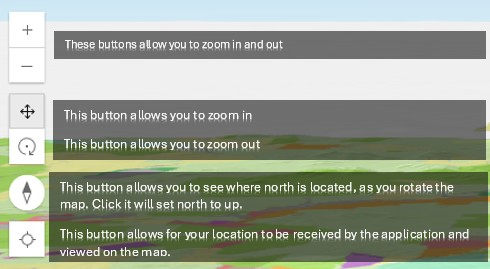

Web Application Information
This specific map is a scene view. This means elevation elements are added for a user’s viewing.
\

Credits
Created by:
Virginia Robenski
Data Sources:
"
Created with:
Leaflet JavaScript Library
And associated plugins:
SidePanel Plugin